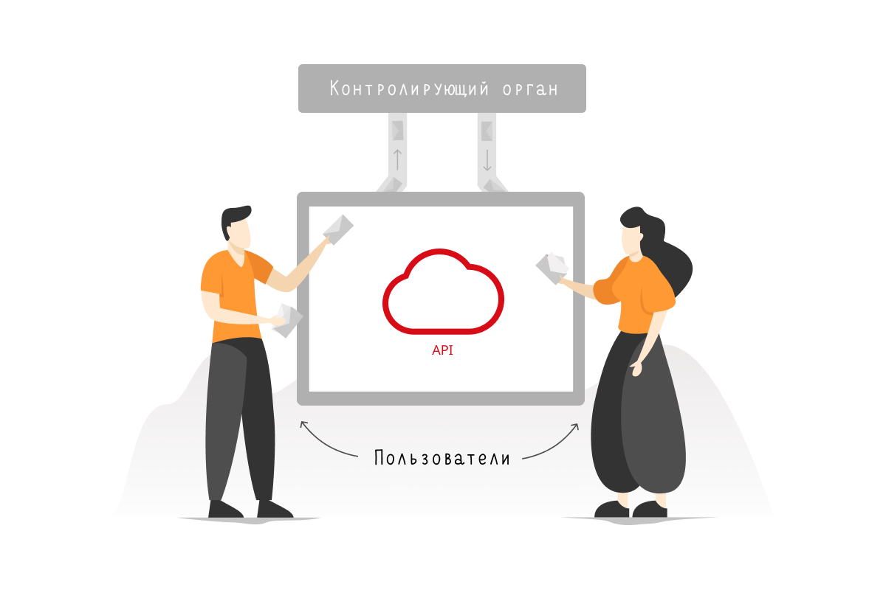

API Контур Экстерна¶
{kind=link}
API позволяет интегрировать сервис отчетности с контролирующими органами в ваши процессы и информационные системы.
Контур.Экстерн является сервисом отчетности, который обеспечивает электронный документооборот между хозяйствующими субъектами и контролирующими органами. Веб сервис обладает рядом преимуществ, но не всегда может поддержать уникальные сценарии пользователя. API Контур.Экстерна нужен, чтобы встроить работу с электронным документооборотом отчетности в интерфейсы информационных систем клиента.
Интеграционные возможности¶
Использование API Контур.Экстерна позволяет:
Авторизовать пользователя в его в учетной записи Контур.Экстерна.
Создать черновик отчета и подготовить его отправке в контролирующие органы, такие как ФНС, ФСС, ПФР, Росстат.
Отправить сформированную отчетность в контролирующий орган.
Отследить и завершить документооборот с контролирующим органом. API позволяет создать все необходимые технологические документы.
Настроить централизованный мониторинг отчетности для любой организационной структуры — вы сможете следить за статусами документооборотов и настроить для себя уведомления по изменениям в них.
Автоматизировать работу с требованиями — вы сможете настроить массовую загрузку поступивших требований в вашу информационную систему. Пользователи смогут формировать и отправлять ответ на требование без ограничения на количество и объем отправляемых документов.
Организовать зашифрованный или расшифрованный архив отчетов в вашей информационной системе или локальном хранилище.
Модели сотрудничества¶
{kind=link}
Абонент Контур.Экстерна¶
Если вы автоматизируете процессы отчетности в своей компании или холдинге, то вы сможете внедрить Контур.Экстерн в свою корпоративную информационную систему. Ваши пользователи будут работать в привычном для них интерфейсе, а API Контур.Экстерна станет инструментом для проверки и передачи данных из вашей информационной системы в контролирующие органы.
Компания-партнер Контур.Экстерна¶
Если вы разрабатываете или уже продаете свою информационную систему, и хотите расширить ее функциональность в части электронного документооборота с контролирующими органами — вам не нужно получать статус оператора ЭДО. Ваша система будет взаимодействовать с контролирующими органами в соответствии с законодательством через API Контур.Экстерна. Вашим клиентам достаточно будет получить учетную запись в Экстерне, и они смогут работать с отчетностью в вашей системе по вашим тарифам.
С чего начать¶
Для начала работы с API Контур.Экстерна:
Получите api-key.
Заключите договор с Контуром.
Пройдите аутентификацию и получите Access Token.
Для криптографических операций необходимо иметь сертификат электронной подписи.
Тестирование сервиса¶
Если вы сомневаетесь, подходит ли вам наш API, мы предоставляем широкий выбор инструментов для тестирования. Вы сможете самостоятельно изучить документацию. А если хотите попробовать поработать с методами, напишите нам на extern-api@skbkontur.ru. Мы вышлем тестовый api-key, учетную запись с тестовым сертификатом и заполненными данными, чтобы вы могли отправлять запросы и познакомиться с API. В сервисе Extern Test Tools вы можете сгенерировать тестовые данные, которые можно использовать на тестовой площадке.
Полезные ссылки¶
Документация Swagger:
Extern Test Tools — сервис для генерации тестовых данных, которые можно использовать на тестовой площадке.